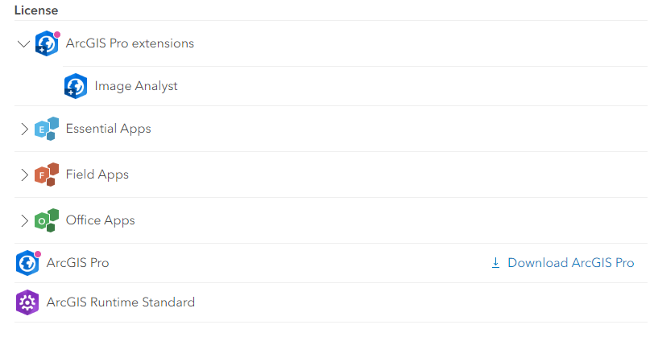
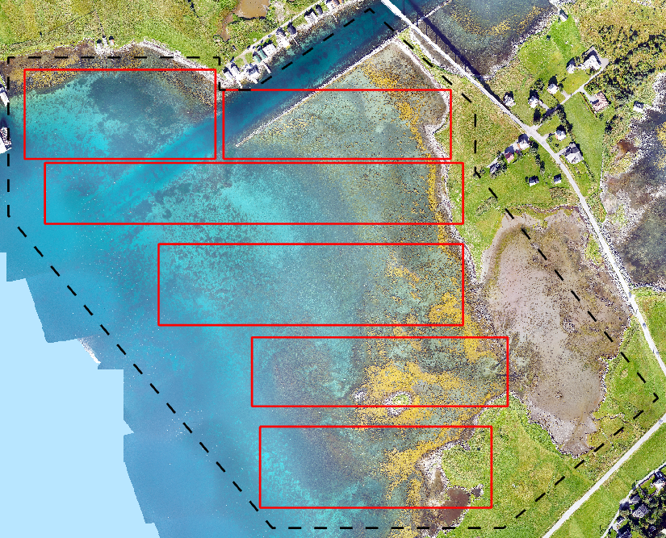
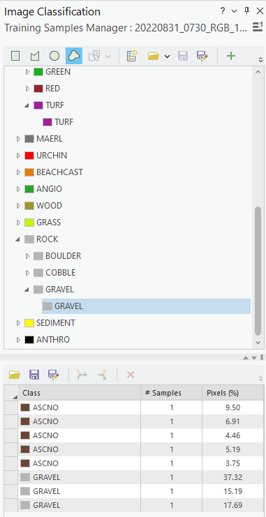

SeaBee annotation workflow
1 Overview
This document describes the SeaBee annotation workflow developed and tested using the Runde/Remøy dataset during December 2022.
The current workflow is preliminary and should become smoother once integrated with Sigma2. The aim of these notes is to help new users get started with annotation using ArcGIS Pro and to avoid common mistakes/pitfalls.
2 Workflow
2.1 Install ArcGIS Pro
Follow the steps below to download and install ArcGIS Pro on your local machine.
Contact Jan Karud to obtain login details for ArcGIS Online. You need access to ArcGIS Pro with the Image Analyst extension.
Login to ArcGIS Online and, under your profile, choose
Settings > Licenses. Check that Image Analyst is available to you underArcGIS Pro extensions, then click the link toDownload ArcGIS Pro(Figure 1).Obtain an administrator password from IT-Vakt and run the installer. You should then be able to start ArcGIS Pro and login to the application using your ArcGIS Online credentials.

2.2 Setup project
The next step is to create a new project within ArcGIS and add SeaBee data to it.
- In ArcGIS Pro, create a new
Mapproject. TheNameshould describe the mission/area you’re annotating andLocationshould be an existing local folder on your PC.
ArcGIS may run slowly if you set Location to be a network folder or a folder that is synchronised to an external server (e.g. DropBox, OneDrive, GoogleDrive).
Within your project folder, create three new subfolders:
class_definitions,vectorandraster. This can either be done using theCatalogpane in ArcGIS or using Windows’ File Explorer.Download relevant mission datasets and add them to the appropriate subfolders. As a minimum, you will need a class definition file and a georeferenced orthomosaic. Optionally, you may include a ground truth dataset, a region of interest (ROI) file and any pre-existing annotation for your area of interest. See Section 2.3 to Section 2.6 for details.
At present, most mission data is hosted on OneDrive/Sharepoint, which means it must be downloaded locally for use with ArcGIS. For large files, this can be slow. Eventually, datasets should be hosted on Sigma2 and exposed as web mapping services (WMS). This will make it possible to add the orthomosaics to your map without having to download large volumes of raw imagery.
2.3 Class definition files
ArcGIS Pro supports hierarchical class definitions, which can be defined manually via the Training Samples Manager. Class definitions are saved as ESRI Classification Schema files (.ecs), which are JSON files with a specific structure.
The classes of interest to SeaBee are complex and creating them manually via the user interface is cumbersome. Section 2 of the notebook here includes code to build an .ecs file with the correct schema from an Excel table, which is more convenient in most cases.
As far as possible, SeaBee will use a standard set of class definitions for habitat mapping. The latest versions are available online here in both Excel and .ecs formats.
The workflow for class definition files is as follows:
Before starting to annotate a new area, everyone involved must agree on which set of class definitions (i.e. which version) to use. If necessary, class definitions can be updated in Excel and a new version of the
.ecsfile created using the code linked above.Everyone should download the same
.ecsfile and add it to theclass_definitionsfolder in their ArcGIS project (created in Section 2.2).
Using a standard set of classes is important if the machine learning algorithms created by SeaBee are to be transferable/re-trainable. It is likely that some changes to the class schema will be necessary initially, but we are hoping to converge on a standard set of habitat classes if possible. Proposed changes should be discussed with Hege Gundersen and Kristina Øie Kvile.
2.4 Orthomosaics
Orthomosaics for your area of interest should be downloaded and added to the raster folder within your ArcGIS project. In most cases, the RGB mosaics are most useful for annotation, since they look familiar and have the highest resolution. Multispectral data may be worth including in some cases, although it has not been used much for annotation so far.
Data are currently available via Sharepoint/Teams in a folder structure that typically looks something like this:
WP4 > 1_DATA-SeaBee > {year} > {mission} > 1_drone > {pilot/organisation} > {time_spec_altitude} > MosaicsA direct link to the 1_DATA-SeaBee folder is here.
Downloading large files from Teams/Sharepoint via the UI can be slow and unstable. Experience with the Runde data suggests the Python API is faster and more reliable. The notebook here shows an example of this.
Eventually, it is hoped that all SeaBee orthomosiacs will be available as WMS layers from Geoserver running on Sigma2. This will make it possible to add raster imagery to ArcGIS without downloading it locally.
2.5 Ground truth data
Point shapefiles of ground truth data are available for most missions. These are typically stored in the mission folder on Sharepoint/Teams within a subfolder named GT.
If available, download the shapefile and add it to the vector folder within your in ArcGIS project.
2.6 Region of interest and training subareas
For each mission, you should create shapefiles defining (i) your region of interest (ROI), and (ii) a set of subareas that will be used to divide the annotation data into “blocks”. When you create these shapefiles, be sure to use the same co-ordinate reference system (CRS) as the orthomosaic you wish to annotate.
The ROI defines the area that you would eventually like to classify. This will typically cover a large proportion of the total image, but excluding anything not covered by your class definition file (see Section 2.3). As an example, see the black dashed line defining the ROI for Remøy on Figure 2.
Machine learning algorithms only learn based on the training samples you provide, so if the prediction area includes things not present in the training data you will get poor results. If possible, use the ROI file to define an area excluding things like roads, buildings and bridges that you are not interested in. You can then ignore these at the annotation stage and focus instead on annotating classes of ecological interest.
If your area includes lots of man-made objects and you can’t exclude them using an ROI for some reason, make sure you annotate a representative selection of each type of object and tag them all as ANTHRO.
The training subareas are a set of rectangles (say, 5 to 10) that define discrete areas within which you create annotation. See the red rectangles on Figure 2 for an example from Remøy. Defining subareas is helpful because we might want to train an algorithm using annotations from e.g. Areas 1 to 3, then iteratively evaluate it against data from Areas 4 and 5. Once we’re satisfied, we can use data from Area 6 to get a independent assessment of the model’s performance.
Defining training subareas is also a convenient way of dividing the annotation workload between several people: each person agrees to annotate one or two specific subareas. This avoids accidental duplication of effort (although at times it may also be useful for several people to annotate the same area to assess consistency).

2.7 Styling the map
Once you have download all the relevant datasets and added them to your project folder in ArcGIS, you can add layers to your map and style them appropriately. Figure 3 shows an example.
Drag each layer from the
Catalogpane (right-most column in Figure 3) to the ArcGISTable of contents(left-most pane in Figure 3). The order of layers in theTable of contentsdefines the drawing order on the map, so put the orthomosaic at the bottom and the other layers on top.Right-click each vector layer in the
Table of contentsand chooseSymbology. This will allow you to define fill and outline colours for the vector layers on your map.[Optional] Right-click the ground truth dataset and choose
Labelling Properties. Set theExpressionto be$feature.Kode, whereKodeis the name of the column in the ground truth attribute table containing the labels you want to use. When you clickApply, you should see each point in the ground truth dataset labelled with its class code.
Whenever you’re working with anything GIS-related, remember to save your work regularly!

2.8 Creating annotation
With the ArcGIS project configured, you can begin creating annotation.
In the ArcGIS
Table of contents(left-most pane in Figure 3), select one of your orthomosaic layers. This will activate the Image Analyst extension.On the “ribbon” (i.e. menu bar), select the
Imagerytab and chooseClassification Tools > Training Samples Manager. A new pane should appear at the right side of the window.In the upper part of the new pane, click the folder icon (which has a tooltip saying
Classification schema) and load your class definition file (see Section 2.3). You should see the class hierarchy added to the upper half of the window.Identify the training area you wish to annotate and zoom in on a feature (e.g. a boulder or patch of algae). In the class hierarchy, select the class you wish to annotate, choose one of drawing tools from the top of the window and begin digitising. In most cases, the
Freehandtool is likely to be most useful.
Each polygon you draw will appear in the lower half of the Image Classification pane (see Figure 4). The Pixels (%) column shows what proportion of the pixels digitised so far belong to each class.

It is a good idea to periodically group polygons of the same class. This is done by selecting the rows you wish to group in the lower pane (using
SHIFT + ClickorCTRL + Click) and then clicking theCollapseicon (two arrows coming together). You can also ungroup using theExpandbutton (one arrow splitting into two).When you have finished your digitising session, click the
Saveicon in the lower pane of the Training Samples Manager to save your training samples as a shapefile in thevectorfolder of your ArcGIS project. You should also save the entire ArcGIS project before closing down.If you wish to continue annotating using a shapefile created previously, first open your ArcGIS project and load the class definitions file (steps 1 to 3 above). Then, instead of creating new annotation from scratch, click the folder icon in the lower part of the
Image Classificationpane (labelledLoad training samples) and browse to the annotation shapefile created previously. You can now continue annotating and save changes back to the original shapefile.
The following tips should help you to create good quality annotation:
Always assign the most detailed level in the class hierarchy that you can confidently identify. If you are not sure, assign the level above.
Group your polygons by class regularly and get into the habit of clicking
Saveimmediately before each grouping operation.Use the
Pixels (%)column to prioritise which classes to focus on. Given the classes of interest, you will probably not be able to produce a “balanced” training dataset, but if you have e.g. 90%BOULDERthere’s no point digitising more boulders.You don’t need to digitise everything within each training subarea (but the more the better).
Do not annotate anything outside of the training subareas and do not draw polygons that cross subarea boundaries.
Do not draw overlapping polygons or polygons that touch one another (ideally, there should be at least one pixel between adjacent polygons).
Do not draw self-intersecting polygons (i.e. when the line you’re drawing crosses itself, such as when drawing a figure-of-eight or bow-tie shape). Such polygons are invalid and they cause problems later in the workflow. In particular, there is a bug/lack of error handling in ArcGIS Pro’s Training Samples Manager that causes the application to crash hard if you attempt to group invalid polygons.
If you’re not sure how to assign something, or where a boundary should be drawn, the key question to ask yourself is: “Would I be happy if an algorithm classified this entire polygon as
X?” If the answer is “Yes”, it is reasonable to tag the whole polygon asX; if the answer is “No” consider subdividing or deleting it.
2.9 Package annotation
Once all subareas have been digitised, each person should upload their annotation shapefiles to an agreed folder on Teams (eventually, on Sigma2). Make sure each subarea is included only once.
Work through the notebook here, specifically Sections 3 to 6. This will:
Merge the annotation shapefiles for each subarea or group of subareas into a single dataset.
Tag each of the annotation polygons with the subarea ID, making it easier to filter/subdivide the training data.
Reconstruct the original, three-column class hierarchy from the single-column ArcGIS output. This makes it easy to generate raster annotation for any of the three “levels”.
Create a geopackage combining the annotation data, the subarea polygons and the region of interest.
The geopackage should be uploaded to Teams/Sharepoint and shared with NR, together with links to the relevant orthomosaics.